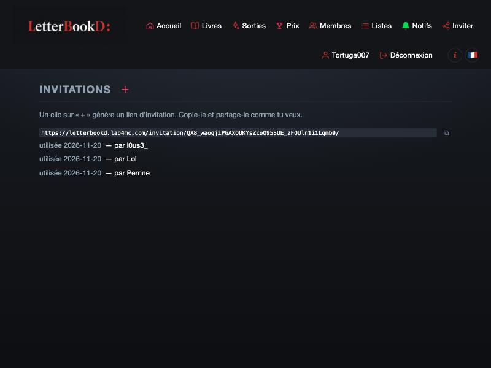

Invitations
À quoi ça sert : Inviter un nouveau membre dans un de tes clubs sans partager de mot de passe. Un clic sur '+' génère un lien que tu peux coller dans un e-mail, un SMS, un message privé — celui qui le suit crée son compte et rejoint le club.

Parcours
La page affiche tes liens d'invitation existants : une URL par ligne, avec statut (en attente ou 'utilisée le ... par ...'). Un clic sur '+' crée un nouveau lien d'invitation unique. IMPORTANT : chaque nouveau lien invalide le précédent non utilisé — tu ne peux avoir qu'un lien actif à la fois, pour la sécurité. Copie le lien avec l'icône dédiée puis partage-le comme tu veux.
Chaînes d'action
Chaque ligne décrit un déclencheur dans l'interface, ce qu'il ouvre (modal ou formulaire), et l'effet produit.
| Déclencheur | Modal / Champs | Effet |
|---|---|---|
| Bouton '+' à côté d'Invitations | Formulaire POST sans paramètre. | Génère un nouveau lien d'invitation unique (URL signée). Le lien précédemment actif est désactivé. Le nouveau lien apparaît en tête de la liste. |
| Icône 'copier' à côté d'une URL d'invitation | — | Copie l'URL dans le presse-papier. Tu peux ensuite la coller dans l'outil de ton choix. |